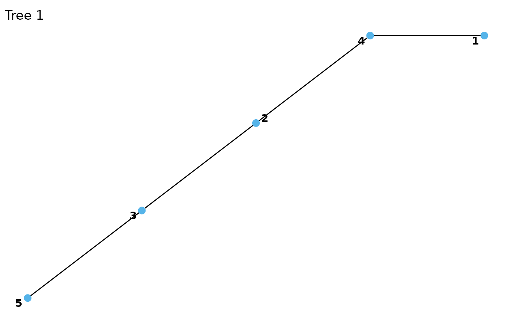
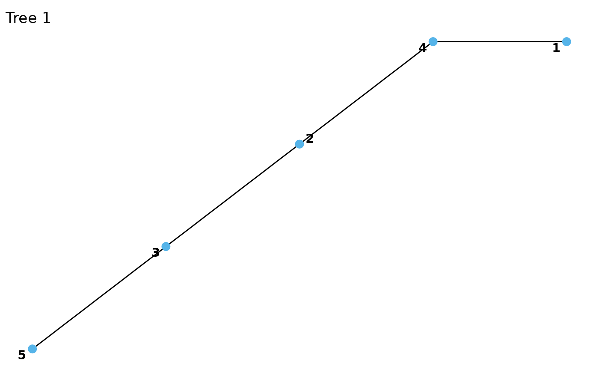

R-vine structures are compressed representations encoding the tree structure
of the vine, i.e. the conditioned/conditioning variables of each edge. The
functions [cvine_structure()] or [dvine_structure()] give a simpler way
to construct C-vines (every tree is a star) and D-vines (every tree is a
path), respectively (see Examples).
Usage
rvine_structure(order, struct_array = list(), is_natural_order = FALSE)
cvine_structure(order, trunc_lvl = Inf)
dvine_structure(order, trunc_lvl = Inf)
rvine_matrix(matrix)Arguments
- order
a vector of positive integers.
- struct_array
a list of vectors of positive integers. The vectors represent rows of the r-rvine structure and the number of elements have to be compatible with the
ordervector. If empty, the model is 0-truncated.- is_natural_order
whether
struct_arrayis assumed to be provided in natural order already (a structure is in natural order if the anti- diagonal is 1, .., d from bottom left to top right).- trunc_lvl
the truncation level
- matrix
an R-vine matrix, see Details.
Details
The R-vine structure is essentially a lower-triangular matrix/triangular array, with a notation that differs from the one in the VineCopula package. An example array is
which encodes the following pair-copulas:
| tree | edge | pair-copulas |
| 0 | 0 | (1, 4) |
| 1 | (2, 4) | |
| 2 | (3, 4) | |
| 1 | 0 | (1, 3; 4) |
| 1 | (2, 3; 4) | |
| 2 | 0 | (1, 2; 3, 4) |
An R-vine structure can be converted to an R-vine matrix using
as_rvine_matrix(), which encodes the same model with a square matrix filled
with zeros. For instance, the matrix corresponding to the structure above is:
Similarly, an R-vine matrix can be converted to an R-vine structure using
as_rvine_structure().
Denoting by M[i, j] the array entry in row i and column j (the
pair-copula index for edge e in tree t of a d dimensional vine is
(M[d + 1 - e, e], M[t, e]; M[t - 1, e], ..., M[1, e]). Less formally,
Start with the counter-diagonal element of column
e(first conditioned variable).Jump up to the element in row
t(second conditioned variable).Gather all entries further up in column
e(conditioning set).
Internally, the diagonal is stored separately from the off-diagonal elements, which are stored as a triangular array. For instance, the off-diagonal elements off the structure above are stored as
for the structure above. The reason is that it allows for parsimonious representations of truncated models. For instance, the 2-truncated model is represented by the same diagonal and the following truncated triangular array:
A valid R-vine structure or matrix must satisfy several conditions which are
checked when rvine_structure(), rvine_matrix(), or some coercion methods
(see as_rvine_structure() and as_rvine_matrix() are called:
It can only contain numbers between 1 and d (and additionally zeros for R-vine matrices).
The anti-diagonal must contain the numbers 1, ..., d.
The anti-diagonal entry of a column must not be contained in any column further to the right.
The entries of a column must be contained in all columns to the left.
The proximity condition must hold: For all t = 1, ..., d - 2 and e = 1, ..., d - t there must exist an index j > d, such that
(M[t, e], {M[1, e], ..., M[t - 1, e]})equals either(M[d + 1 - j, j], {M[1, j], ..., M[t - 1, j]})or(M[t - 1, j], {M[d + 1 - j, j], M[1, j], ..., M[t - 2, j]}).
Condition 5 already implies conditions 2-4, but is more difficult to check by hand.
Examples
# R-vine structures can be constructed from the order vector and struct_array
rvine_structure(order = 1:4, struct_array = list(
c(4, 4, 4),
c(3, 3),
2
))
#> 4-dimensional R-vine structure ('rvine_structure')
#> 4 4 4 4
#> 3 3 3
#> 2 2
#> 1
# R-vine matrices can be constructed from standard matrices
mat <- matrix(c(4, 3, 2, 1, 4, 3, 2, 0, 4, 3, 0, 0, 4, 0, 0, 0), 4, 4)
rvine_matrix(mat)
#> 4-dimensional R-vine matrix ('rvine_matrix')
#> 4 4 4 4
#> 3 3 3
#> 2 2
#> 1
# coerce to R-vine structure
str(as_rvine_structure(mat))
#> List of 4
#> $ order : num [1:4] 1 2 3 4
#> $ struct_array:List of 3
#> ..$ : int [1:3] 4 4 4
#> ..$ : int [1:2] 3 3
#> ..$ : int 2
#> $ d : Named num 4
#> ..- attr(*, "names")= chr "dim"
#> $ trunc_lvl : Named num 3
#> ..- attr(*, "names")= chr "trunc_lvl"
#> - attr(*, "class")= chr [1:2] "rvine_structure" "list"
# truncate and construct the R-vine matrix
mat[3, 1] <- 0
rvine_matrix(mat)
#> 4-dimensional R-vine matrix ('rvine_matrix'), 2-truncated
#> 4 4 4 4
#> 3 3 3
#> 2
#> 1
# or use directly the R-vine structure constructor
rvine_structure(order = 1:4, struct_array = list(
c(4, 4, 4),
c(3, 3)
))
#> 4-dimensional R-vine structure ('rvine_structure'), 2-truncated
#> 4 4 4 4
#> 3 3 3
#> 2
#> 1
# throws an error
mat[3, 1] <- 5
try(rvine_matrix(mat))
#> Error : not a valid R-vine array: the upper left triangle can only contain numbers between 1 and d (number of variables).
# C-vine structure
cvine <- cvine_structure(1:5)
cvine
#> 5-dimensional R-vine structure ('rvine_structure')
#> 5 5 5 5 5
#> 4 4 4 4
#> 3 3 3
#> 2 2
#> 1
plot(cvine)
 # D-vine structure
dvine <- dvine_structure(c(1, 4, 2, 3, 5))
dvine
#> 5-dimensional R-vine structure ('rvine_structure')
#> 4 2 3 5 5
#> 2 3 5 3
#> 3 5 2
#> 5 4
#> 1
plot(dvine)

# D-vine structure
dvine <- dvine_structure(c(1, 4, 2, 3, 5))
dvine
#> 5-dimensional R-vine structure ('rvine_structure')
#> 4 2 3 5 5
#> 2 3 5 3
#> 3 5 2
#> 5 4
#> 1
plot(dvine)
